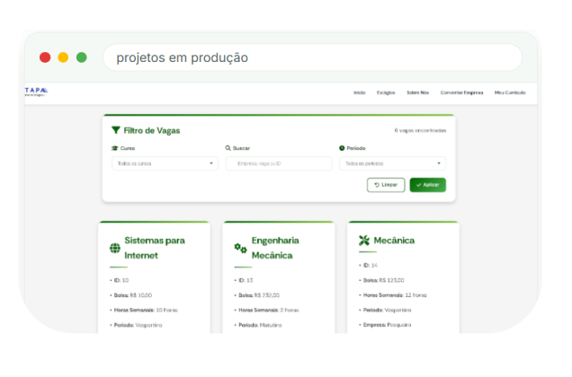

Quem somos
Estudantes movidos por
inovação e impacto real
Somos a primeira empresa júnior do IFMS, unindo o conhecimento acadêmico à prática de mercado para criar soluções que transformam negócios.
Nossa história
Do IFMS para o mercado,
desde 2024
A Pantanal Tech nasceu em 15 de agosto de 2024 como a primeira empresa júnior do IFMS, formada por estudantes do curso de Tecnologia em Sistemas para Internet do campus Campo Grande.
Nosso propósito é aplicar o conhecimento acadêmico para desenvolver soluções tecnológicas inovadoras que atendem às necessidades reais do mercado. Criamos ferramentas digitais que otimizam processos e ampliam a presença online das empresas.
Somos uma equipe dedicada a conectar teoria e prática, oferecendo soluções que respeitam a cultura local e o meio ambiente, inspirados pelo Pantanal que carregamos no nome.
